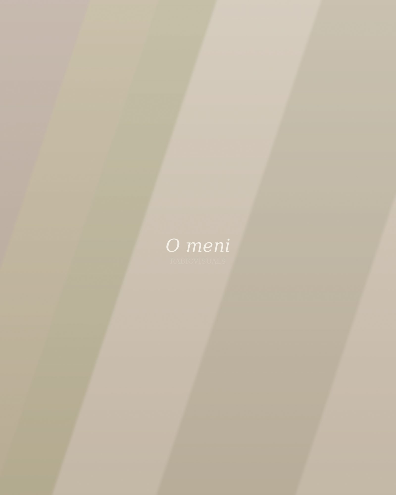

Zame je fotografija predvsem poslušanje.
Preden dvignem fotoaparat, si vzamem čas, da spoznam ljudi pred njim — njihov ritem, njihov smeh, njihovo tišino.
Sem fotograf iz Slovenije in za RabicVisuals stojim sam — od prvega pogovora do zadnje oddane fotografije. Ne iščem popiranih poz ali vnaprej naštudiranih izrazov. Iščem trenutke, ki se zgodijo sami od sebe: pogled med staršema med prvim plesom, roko, ki se nehote stisne, smeh, ki uide, preden ga kdo ujame v besede.
Fotografiram že vrsto let in v tem času sem se naučil ene stvari: najboljše slike nastanejo, ko se ljudje pred kamero počutijo varne. Zato delam počasi, brez pritiska in brez dolgih seznamov poz — z zaupanjem, da se pristnost pokaže sama, če ji damo prostor.
Kako delam
Štiri stvari, ki jih upoštevam pri vsakem fotografiranju, ne glede na to, ali gre za poroko, portret ali dogodek.
Pristno
Beležim resnične izraze in trenutke, ne postavljenih prizorov.
Umirjeno
Delam v mirnem tempu, ki ljudem pusti prostor, da so, kar so.
Pozorno
Opazujem podrobnosti in trenutke, ki se zgodijo samo enkrat.
Brez prisile
Nobenih vsiljenih poz — le usmeritve, ki pomagajo, da ste lahko sproščeni.
Fotografije, ki jih ustvarim, niso namenjene le današnjemu dnevu. Namenjene so trenutku čez deset let, ko jih boste znova odprli in se za hip vrnili nazaj.
Vsak posnetek obdelam ročno in premišljeno, z enotnim, prepoznavnim slogom, ki se prilagaja svetlobi in vzdušju dneva — ne obratno. Rezultat so fotografije, ki delujejo mirno, iskreno in časovno neomejeno.